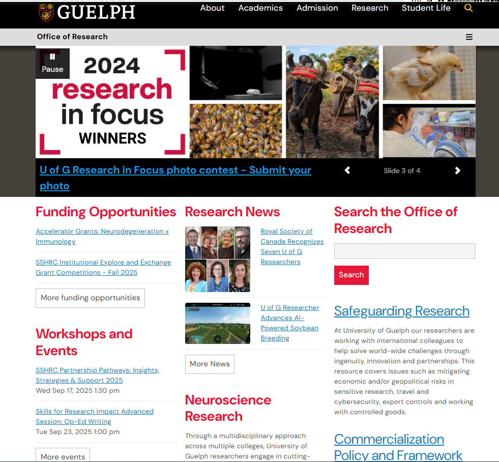
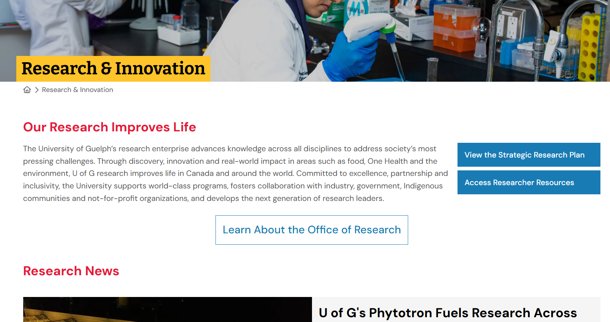

Since being here before but with added responsibilities, I created and refreshed
my goals for the term.
Teamwork
Due to the web redesign project, the office moved forward with a new initiative to implement
a
structured governance to have formal coordination when future modifications to the site come
about. This led to the creation of the Website Coordination Committee, of which
I was formally a member as a technical voice and for the implementation of approved changes.
With both the project and new governance, my goal for the term was to understand the
intricacies of what it means to be a great team member in project management.
I wanted my peers to trust and rely on me to get my part done.
Technological Literacy
The project had a huge learning impact on my work experience. In the position,
it was important to understand the needs of the client (researchers) and the
business (Research administration managers and leadership), and translate that to an
efficient technical level. My goal here was to use the content management system
to meet the needs of both the project and the requests. I understood there would be new
tools
and technologies that I would have to familiarize myself with to work efficiently.
Leadership
I've worked for this office off-and-on with alternating positions and increasing
responsibilities. Now, I was in a position of being one of the lead voices of
technical decisions for the website redesign. My goal was to give sound feedback,
communicate clearly, and execute the needs on the technical side.
Meetings, cookies and cut-outs!
Design
As mentioned, I was working as a Work-Study (part-time) student at the office on Phase I of
the project. We split the website into two sides (of the same coin):
Marketing and "For-Researchers". I joined in the middle of the Marketing phase, responsible
for designing and formatting content of varying pages. I would come up with a design,
implement it, and showcase it to the core working group. They would give their feedback on
the
design, and I would make those changes.
I saw it through to the end of the Marketing phase, which smoothly and successfully launched
in February.
I then accepted a co-op position for the role, dedicating my full time to the next phase of
the project. My time was dedicated to the technical design of the proposed menu structure
and reorganizing existing webpages. The tech team (two of us)
used tools like Excel for tracking and Visio for site mapping.

Before: Original Design

After: UX Redesign
Meetings & Cookies
The Website Coordination effort was a cross-departmental and cross-functional team. Our
working group consisted of different players with varying domain knowledge to have the most
information when making decisions for the website redesign. With that, we had many,
many discussions and meetings.
We had Research Communications, Research Administrators, IT, Research Project Managers,
Leadership, University Comms & Marketing...
The list could go on.
Our working group (which was a condensed team) had to make contact
with several important figures to gain their insight and perspective. This all meant lots
of meetings. My Project Manager would always schedule in-person meetings with pastries and
snacks. The
cookies were always so good! We used these meetings to discuss workflows, understand gap
analysis, flag outdated content, reorganize mapping, and eat cookies.
We even created physical representations of existing webpages to have more freedom. We
moved things around constantly, and it was an ever-evolving system.
Conclusion
Overall, I loved the experience of the position. I've worked at this office
off-and-on for almost 2 years now, and every time I'm back, it's always a surprise that
there is
something new to gain and learn. Being on the WCC made me realize my love for project
management and taking on a leadership role. It was scary but pride-filling knowing my
opinion had weight and my decisions mattered to the future integrity of the project. I grew
my relationships with my coworkers both in and out of the working group. Being in contact
with other departments, both in the Research office and others, helped me learn more about
the
inner workings of the university and what fosters great work.
Reflecting on the start of the Redesign Initiative...
As mentioned before, this was a role where I took on more of a leadership position, my voice
affecting decisions made for the betterment of the project. I worked closely with others
with different perspectives, understanding how to communicate, resolve conflict, and hear
other people's points of view. With a new initiative, I also needed to research and learn
new
software to help streamline my workflow.
Teamwork
I always looked for chances to take initiative, give feedback, and
take on important tasks to see the success of the team. I
asked questions to get a full understanding of the situation at
hand and be supportive to the others around me.
I learned that there are many ways to demonstrate effective teamwork. I was able to follow
my action
plan to strengthen my teamwork. Taking initiative in doing tasks
increased the ease-of-life of others and removed another task from the
to-do list. Clear and understanding communication helps convey
messages and moves progress forward. Asking questions to get a
better understanding and supporting others made me part of the conversation
more, consequently increasing my contribution to the work.
Technological Literacy
At first, my Excel knowledge was extremely basic. As the workload increased, I needed to
unlock the potential of Excel with its expansive toolset. I learned so many different
functions (generating heatmaps, filtering, and data visualizations) that increased my work
speed significantly. I had to research tools that could help our team visualize both the
current
and future structure mapping of the website. Visio, though an amazing tool for all types of
visuals, was not an easy learn.
Leadership
I knew I reached my goal when my peers and team members
trusted my feedback and opinions concerning all things related to
the technical side of a project or request. As one of the technical voices in the redesign
project, I had to give my perspective on certain matters consistently and convey
them in an appropriate way that was easily understandable to
others. I was an active voice in meetings and I asked thought-provoking questions to further
conversations on how we could help our end-users more effectively.
Problem-Solving
Every day I was presented with problems that I had to solve creatively or think critically on
how to solve when they were unfamiliar to me. Every day was a new problem, but as
time went on, I was able to subconsciously develop general strategies that would lead me
closer to finding solutions. This played a major part in my learning, which helped me adapt
quicker to each situation.